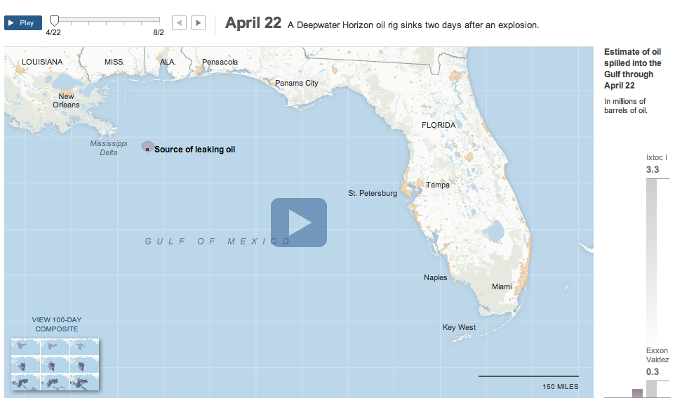

How to make interactives
So, here it is at last: How to make your webpages interactive. How do I make an interactive story?
Where we're going
- Learn a few basic programming concepts ...
- ... so we can learn three lines of code ...
- ... that are the foundation of many interactives
What we're headed to, by the end of the lesson, is learning how to write a few lines of code that you can reuse and adapt to do a huge range of interactions, from slideshows to timelapses to tabs to calculators to simple animation.
So keep that in mind. Three lines of code. It's going to be a bit of a walk, but we'll get there together.
Under the hood
To start us off, I thought it'd be helpful to show you how an interactive works.
It's the Times map of the oil spill of the Gulf. This was before I got there, but I think this is a great graphic: It's simple, tells a meaningful story, and is interactive in exactly the way you want for this.
Showing example form a smaller newsroom. If you have two photos, and some knowledge, you can do this. And it's powerful.
What is an interactive?
- When the user interacts with the page, the page does something, like show text or hide an image
- When I click on a "before" photo, the "after" photo appears
- When I type in a tweet box, the number of remaining characters appears
This is what Andrew was talking about, interaction.
Enter jQuery
- It's a JavaScript file that makes coding easier
- Use it on your page by "installing", or including, it.
How do we include jQuery?
- Google "jquery google"
- Paste the snippet below into your head
- Add "http:" before the "//" to finish linking it
<html>
<head>
<script src="http://ajax.googleapis.com/ajax/libs/jquery/2.0.0/jquery.min.js"></script>
</head>
</html>
Basically, you find the URL of a jQuery file, and tell your Web page to load it. Google is willing to pay the costs of sending this file to millions of people, and lets you use the file on their computers for free.
So: Google jQuery. Go to page. Copy the URL.
Creating your JavaScript file
- In your "js" folder, create a "script.js" file
- In your "index.html", add a script tag after jQuery
<html>
<head>
<script src="http://ajax.googleapis.com/ajax/libs/jquery/2.0.0/jquery.min.js"></script>
<!-- Add the following line -->
<script src="js/script.js"> </script>
</head>
</html>
Basically, you find the URL of a jQuery file, and tell your Web page to load it. Google is willing to pay the costs of sending this file to millions of people, and lets you use the file on their computers for free.
So: Google jQuery. Go to page. Copy the URL.
A basic jQuery call
jQuery("img").fadeOut();
Syntax of a call
Try it!
- Go to codewithme.us/jquery
- Inspect the page, and click on Console
- Type this and hit enter: jQuery("img").fadeOut();
- Then try this: jQuery("img").fadeIn();
Helpful reference for jQuery.
Let's do it live!
jQuery("img").fadeOut();
sisi("door").open();
sisi("door").close();
What about the timing?
sisi(".main-door").open();
sisi(".main-door").open();
});
Back to jQuery
sisi(".main-door").open();
});
jQuery("img").fadeOut();
});
<img src="http://codewithme.us/images/owl.gif" />
<p>Click to shoo away the owl! </p>jQuery("p").click(function() {
jQuery("img").fadeOut();
});When using jQuery, ask yourself:
- What part of the page is the user interacting with? The paragraph.
- What are they doing to it? Clicking it.
- In response, what part of the page do you want to change? The image.
- How do you want to change it? Fade it out.
Fill in the jQuery blanks
- When the paragraph is clicked, the image will fade out.
<img src="http://codewithme.us/images/owl.gif" />
<p>Click to shoo away the owl! </p>jQuery("______").______(function() {
jQuery("______").______();
});Fill in the jQuery blanks
- When the paragraph is clicked, the image will fade out.
<img src="http://codewithmemiami.com/images/owl.gif" />
<p>Click to shoo away the owl! </p>jQuery("paragraph").is clicked(function() {
jQuery("img").will fade out();
});In real jQuery
- When the paragraph is clicked, the image will fade out.
<img src="http://codewithme.us/images/owl.gif" />
<p>Click to shoo away the owl! </p>jQuery("p").click(function() {
jQuery("img").fadeOut();
});<html>
<head>
<script src="js/jquery.min.js"></script>
<script src="js/script.js"></script>
</head>
<body>
<img src="http://codewithme.us/images/owl.gif" />
<p>Click to shoo away the owl!</p>
</body>
</html>jQuery("p").click(function() {
jQuery("img").fadeOut();
});A robot goes across the street...
<html>
<head>
<script src="js/jquery.min.js"></script>
<script src="js/script.js"></script>
</head>
<body>
<img src="http://codewithme.us/images/owl.gif" />
<p>Click to shoo away the owl!</p>
</body>
</html>jQuery(document).ready(function() {
jQuery("p").click(function() {
jQuery("img").fadeOut();
});
});With your mentor
- Take a breath. You can do this!
- Do exercise 10: Create a before and after graphic